Primeiros Passos¶
O Dispatcharr pode ser instalado usando Docker em várias plataformas, incluindo Windows, macOS, Proxmox e Unraid. Este guia fornece instruções detalhadas para cada método.
Instalação¶
Consulte o guia de instalação.
Inicialização¶
Após a instalação e inicialização, abra um navegador e acesse http://{seu_ip_aqui}:9191
Crie sua conta de usuário inserindo um nome de usuário e senha que você lembrará. Opcionalmente, você pode adicionar um endereço de e-mail.
Note
Endereços de e-mail atualmente não são utilizados, mas podem ser usados em versões futuras.
Adicionando M3U e EPG¶
- Adicione seu primeiro M3U clicando no botão
Add M3Uno lado direito sob "Getting started". - Isso o levará ao M3U & EPG Manager (também acessível pela barra de navegação à esquerda).
Captura de tela
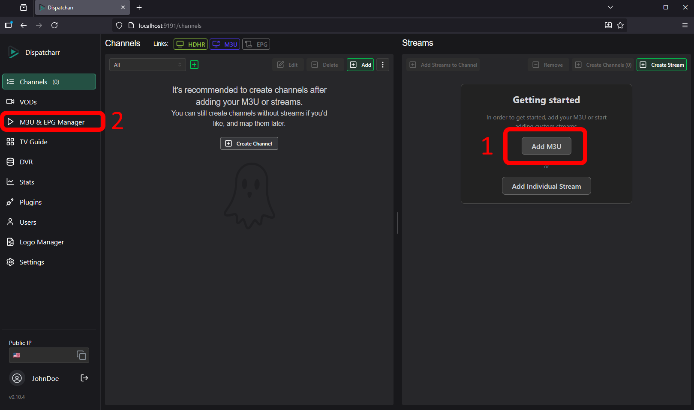
- Clique no botão
Addsob M3U Accounts para adicionar um M3U - Clique no botão
Add EPGsob EPGs para adicionar um guia de programação
Captura de tela
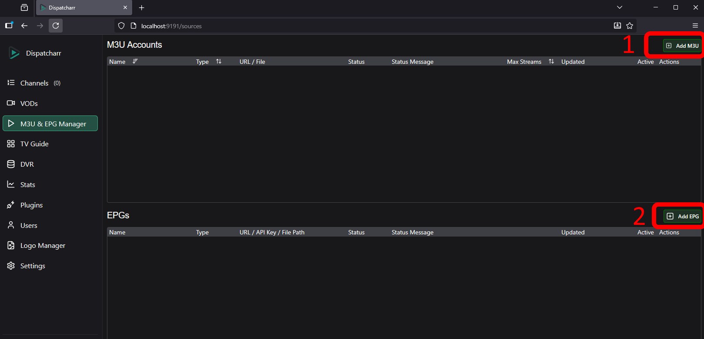
- Insira um nome para sua Conta M3U
- Escolha o tipo de conta (Xtream Codes ou Standard M3U) e insira a URL (se estiver usando Xtream Codes, insira o nome de usuário e senha associados)
- Opcionalmente, você pode definir um número máximo de streams simultâneos permitidos, ou deixar em 0 para ilimitado.
- Clique em
Save.
Captura de tela
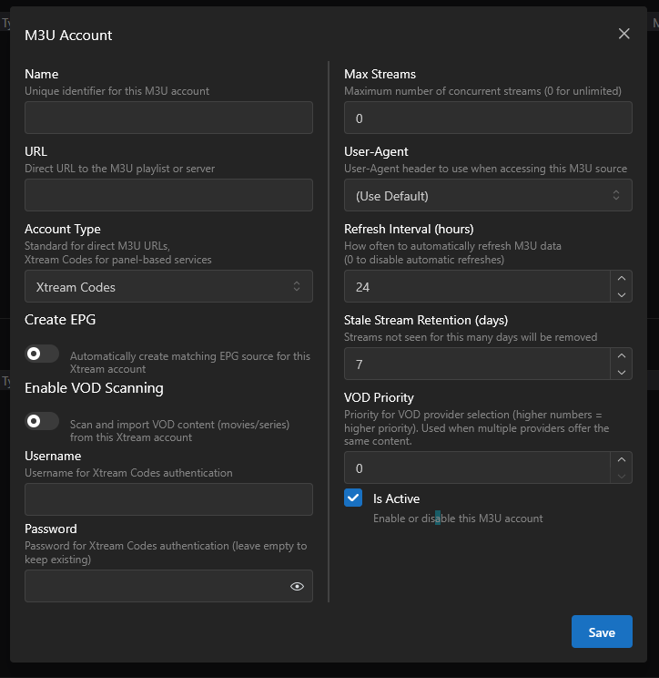
- Clique no ícone de edição correspondente da conta M3U recém-adicionada
- Clique no botão
Groupse selecione quais grupos você gostaria de adicionar, depois clique emSave and Refresh
- Clique no botão
- Dependendo do tamanho do seu M3U, pode levar algum tempo para carregar.
- Adicione um guia de programação clicando no botão
Add EPGsob a seção EPGs. - Insira um nome para seu EPG, depois insira a URL e, se necessário, a chave de API.
- Escolha o tipo de fonte, depois clique em "Submit".
- Dependendo do tamanho do seu EPG, pode levar algum tempo para carregar.
Captura de tela
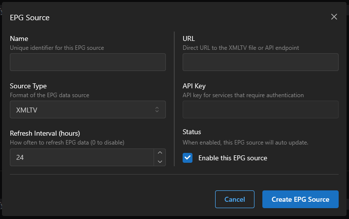
Criando seu primeiro canal¶
- Vá para a tela principal de Channels na barra de navegação.
- Se um M3U foi adicionado e escaneado com sucesso, você deve ver uma lista de streams no lado direito da página sob "Streams".
- Encontre um stream na lista, ou pesquise um digitando no cabeçalho da coluna "Name".
- Pressione o botão "Create New Channel" para adicionar o stream a um novo canal.
Captura de tela
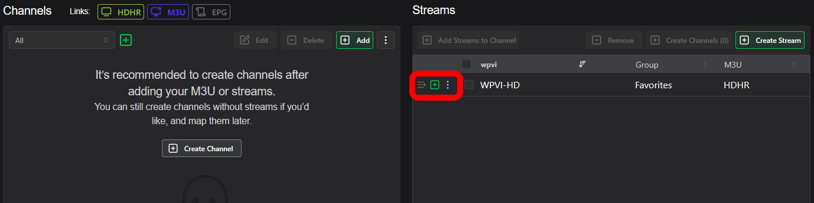
- Se quiser adicionar um stream de backup de um provedor diferente, encontre o stream correspondente na lista de streams e pressione o botão "Add to Channel" sob a coluna "Actions"
Configuração de Reprodução de Mídia¶
Jellyfin¶
Adicionar fonte de TV¶
- O Jellyfin pode aceitar o formato HDHR ou M3U.
- No Dispatcharr, navegue até a página "Channels" e clique nos botões HDHR ou M3U no topo da página, e copie a URL fornecida.
Captura de tela
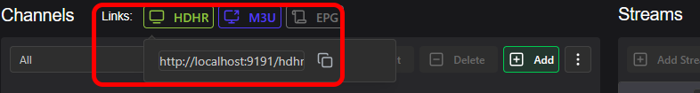
Captura de tela
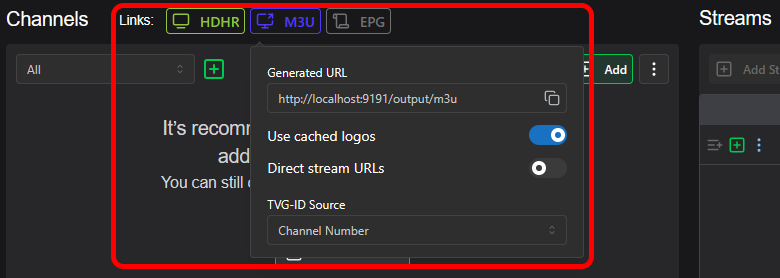
- Navegue até sua página do Jellyfin e clique no Ícone do Painel Admin para gerenciar seu servidor Jellyfin.
- Clique em "Live TV" sob a seção Live TV, depois no botão '+' ao lado de "Tuner Devices".
Captura de tela

- Em 'Tuner Type', escolha HD Homerun se estiver usando a URL HDHR, ou M3U Tuner se estiver usando a URL M3U do Dispatcharr.
- Cole a URL e salve.
Note
Se estiver adicionando como M3U, deixe o limite de streams simultâneos definido como "0", pois os limites de stream serão gerenciados pelo Dispatcharr.
Adicionar Fonte de Dados do Guia¶
- Para adicionar dados do guia do Dispatcharr, navegue até a página "Channels" do Dispatcharr, clique no botão EPG no topo da página e copie a URL fornecida.
Captura de tela
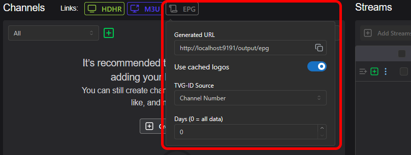
- Na página de configurações de Live TV do Jellyfin, clique no '+' ao lado de "TV Guide Data Providers".
Captura de tela

- Escolha 'XMLTV' e cole a URL
- Os dados de EPG serão mapeados automaticamente.
Plex¶
- O Plex aceita o formato HDHR e pode encontrar unidades HDHR automaticamente na maioria das vezes.
- No Dispatcharr, navegue até a página "Channels" e clique no botão HDHR no topo da página, e copie a URL fornecida.
Captura de tela
- Navegue até sua página do Plex e clique no ícone de Configurações para gerenciar seu servidor Plex.
- Role até
Managee clique emLive TV & DVR, depoisSet Up Plex Tuner. - O Plex deve encontrar automaticamente sua instância do Dispatcharr, mas se não encontrar, clique em
Don't see your HDHomeRun device? Enter its network address manuallye insira a URL HDHR que você copiou do Dispatcharr e pressioneConnect.
Captura de tela
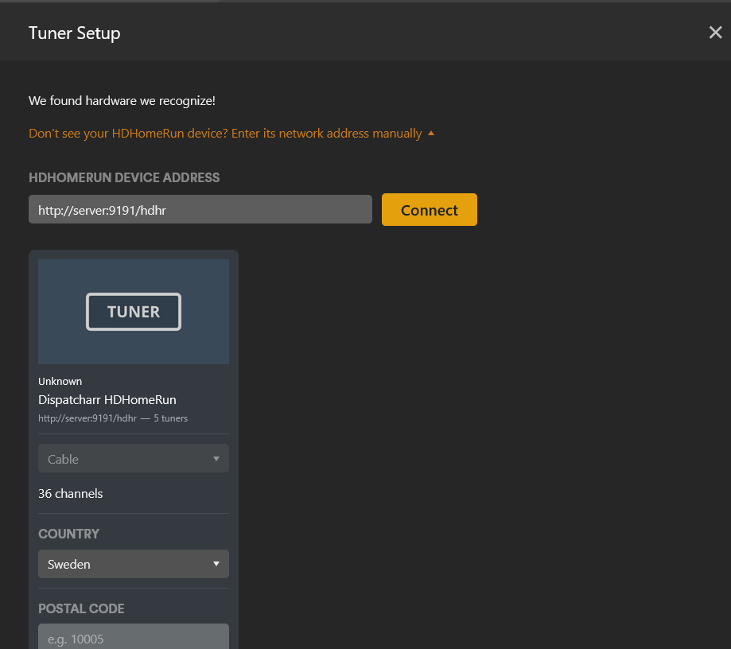
- O Plex fornecerá o EPG deles se suportar seu país e código postal. Se eles não fornecerem EPG para você ou se quiser usar o seu próprio, você pode adicionar o EPG do Dispatcharr.
Warning
Observe que, se o EPG do Plex não existir para sua região, você será obrigado a fornecer o seu próprio antes de continuar.
Captura de tela

- Agora você pode mapear o EPG para os canais se algum não foi correspondido automaticamente.
Captura de tela
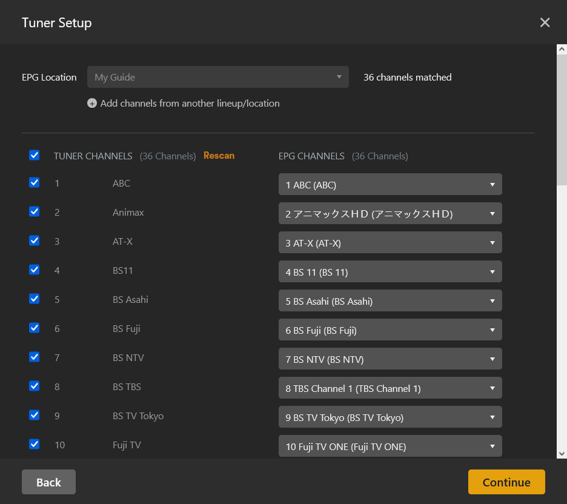
- Pressione
Continuee o Plex carregará os canais e dados de EPG
Logos faltando?
Adicione ?cachedlogos=false ao final do seu EPG para ignorar o cache de logos, que o Plex atualmente não suporta.
ChannelsDVR¶
- No Dispatcharr, navegue até a página "Channels" e clique no botão M3U no topo da página, e copie a URL fornecida.
Captura de tela
- Navegue até a página do seu servidor ChannelsDVR e vá para "Settings" e selecione "Sources"
Captura de tela

- Em Live TV pressione o botão verde "Add Source"
Captura de tela
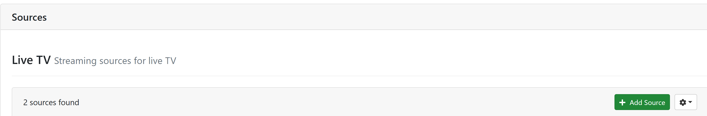
- No pop-up escolha Custom Channels
Captura de tela
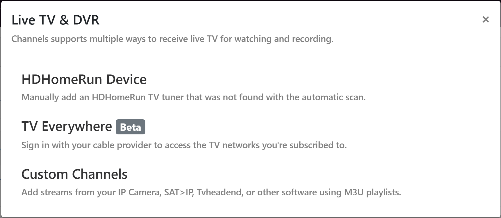
- No menu Custom Channels use as seguintes opções:
- Nickname: Adicione um nome para seu M3U
- Stream Format: MPEG-TS
- Source: Use URL e cole o link M3U do Dispatcharr
- Options:
- Refresh URL daily
- Prefer channel-number from M3U
- Prefer channel logos from M3U se quiser usar os logos exibidos/gerenciados no Dispatcharr
- No Stream Limit (o Dispatcharr gerencia os limites de stream)
- XMLTV Guide Data:
- Se você definiu um Gracenote ID em cada canal e quer que o ChannelsDVR construa um guia completo de 14 dias usando os dados deles, não adicione um guia e pressione Save.
- Se quiser usar os Dados do Guia do Dispatcharr, coloque o link EPG do Dispatcharr, selecione a frequência de atualização e pressione Save.
Captura de tela
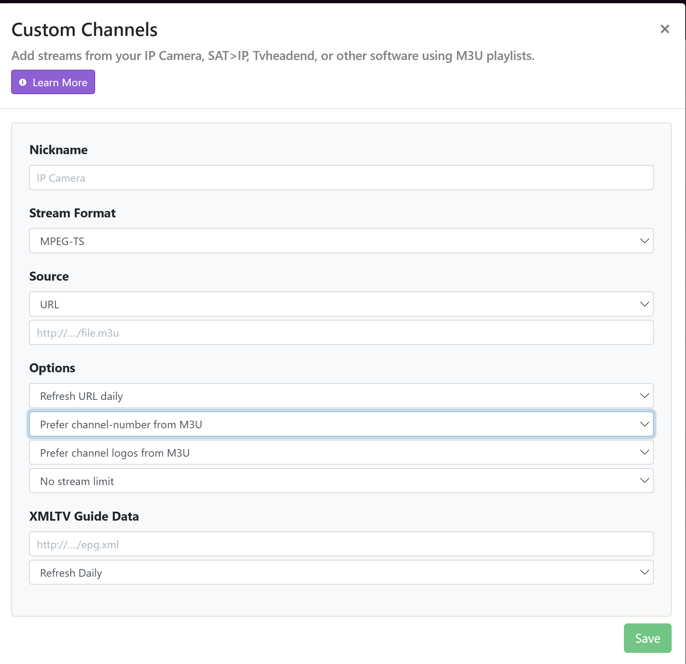
Emby¶
Adicionar fonte de TV¶
- O Emby pode aceitar o formato HDHR ou M3U.
- No Dispatcharr, navegue até a página "Channels" e clique nos botões HDHR ou M3U no topo da página, e copie a URL fornecida.
Captura de tela
Captura de tela
- Navegue até sua página do Emby e clique no ícone de Configurações para gerenciar seu servidor Emby.
- Clique em "Live TV", depois "Add TV source".
- Escolha HD Homerun se estiver usando a URL HDHR, ou M3U se estiver usando a URL M3U do Dispatcharr.
- Cole a URL e salve.
Note
Se estiver adicionando como M3U, deixe o limite de streams simultâneos definido como "0", pois os limites de stream serão gerenciados pelo Dispatcharr.
Adicionar Fonte de Dados do Guia¶
- Você pode usar os dados do guia fornecidos pelo Emby, dados do guia do Dispatcharr, ou uma combinação de ambos.
- Para adicionar dados do guia fornecidos pelo Emby, clique em "Add Guide Data Source", escolha seu país, depois escolha "Emby Guide Data" sob Guide Data Source e clique em Next.
- Siga as instruções fornecidas para encontrar os dados de canal que você precisa. Você pode adicionar múltiplas fontes de Emby Guide Data se necessário.
- O Emby tentará corresponder canais aos dados do guia, mas pode ser necessário mapear manualmente os dados do guia para seus canais. Você pode fazer isso em "Live TV" > Channels, ou no gerenciador de metadados do Emby.
- Para adicionar dados do guia do Dispatcharr, navegue até a página "Channels" do Dispatcharr, clique no botão EPG no topo da página e copie a URL fornecida.
- Na página de configurações de Live TV do Emby, clique em "Add Guide Data Source", escolha seu país, depois escolha "XMLTV" Guide Data Source e clique em Next.
- Os dados de EPG serão mapeados automaticamente.